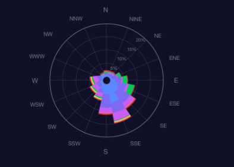

浦仪监测系统
2020年05月11日 周一 19 : 46
 管理员
管理员- 首页
- 时程数据
- 测点时程
- 交通荷载
- 统计数据
- 测点时程统计
- 交通荷载统计
- 结构
状态分析- 结构动力特性分析
- 应力五度指标
- 结构变形响应分析
- 正交异性板疲劳分析
- 拉索索力时频域分析
- 结构相关性分析
- 阻尼器/梁端纵向累积行程分析
- 行人舒适度评价
- 服役
环境分析- 实际车载效应分析
- 风荷载分析
- 温度场分析
- 预警管理
- 结构状态预警
- 服役环境预警
- 系统管理
- 角色管理
- 监测设备管理
- 资料备份
风速风向
风速功率谱
- 实时
- 10分钟
- 小时
- 日
风速、风向、紊流强度时程
风速-紊流强度相关性
- 实时
- 10分钟
- 小时
- 日